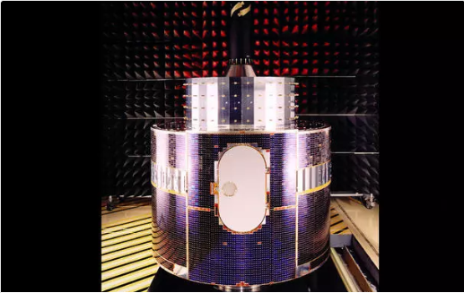
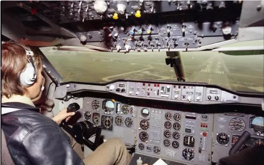
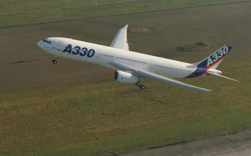

История Airbus на протяжении десятилетий
Обладая 50-летним опытом инноваций, технологических инноваций и отраслевых вех, Airbus является лидером в проектировании, производстве и поставке аэрокосмической продукции, услуг и решений для клиентской базы по всему миру – с операциями для коммерческих самолетов, вертолетов, оборонной промышленности.
1960-е годы | Закладываем фундамент

1965
SA330 Puma совершила свой первый полет
Этот средневесный двухмоторный самолет был первым из длинной серии, которая в различных модификациях выпускалась и по сей день.
1968
Первый полет Gazelle SA341
Второй прототип Gazelle SA341 совершил свой первый полет 12 апреля 1968 года и имел обтекатель рулевого винта Fenestron.
1969
Concorde отправился в свой первый рейс в Тулузе
Коммерческая авиация совершила сверхзвуковой прыжок в будущее, выполнив первый полет «Конкорда», которым командовал Андре Тюркат.
1970-е годы | Европейское сотрудничество


1970
Airbus Industrie официально была создана как GIE.
Французская Aerospatiale (слияние SEREB, Sud Aviation и Nord Aviation) и немецкая Deutsche Airbus – группа из четырех фирм.

1971
Первый полет С-212 Авиокар
Разработанный предшественником Airbus CASA, C212 использовался для чартерных и ближнемагистральных грузовых перевозок, для поисково-спасательных операций и различных военных применений.
1972
Первый полет SA360 Dauphin
Первоначально Dauphin разрабатывался как преемник Alouette III и должен был называться «Business Alouette».

1972
Первый в мире двухдвигательный широкофюзеляжный самолет
Первый полет А300 состоялся в Тулузе 28 октября 1972 года, на месяц раньше запланированного срока, несмотря на несколько задержек из-за плохой погоды.
1973
Одиссея по Южной и Северной Америке
A300 отправляется в шестинедельную коммерческую экспедицию по Северной и Южной Америке, чтобы продемонстрировать новое творение Airbus клиентам, пилотам и руководителям
1974
Гелиос-А и Гелиос-Б, запуски в 1974 и 1976 годах.
Гелиос-А и Гелиос-Б были первыми космическими зондами, произведенными за пределами США и Советского Союза и покинувшими орбиту Земли, их запуски состоялись в 1974 и 1976 годах.

1974
A300B2 поступает на регулярные рейсы Air France
Первые коммерческие рейсы Air France выполнялись из Парижа в Лондон.

1974
Первый полет Торнадо
Прототип MRCA, позже известный как «Торнадо», совершил свой первый полет в Манчинге.

1974
Запуск франко-германского спутника связи Symphonie.
Symphonie стала первой европейской спутниковой системой связи, выведенной на орбиту с помощью американской ракеты «Дельта».

1977
Запуск первого европейского метеорологического спутника Meteosat
Meteosat, первый европейский метеорологический спутник и основа компетенции Airbus в области метеорологических платформ.

1978
Eastern Airlines, первый клиент Airbus в США, заказала 23 самолета A300B4
После прорывного соглашения с Eastern Airlines последовала серия заказов, которые подтвердили, что Airbus является серьезным конкурентом в мировой авиастроительной отрасли.

1978
Первый полет AS332 Super Puma
AS332 Super Puma оснащен противоаварийными топливными баками, которые предлагали военным пользователям новые гарантии с точки зрения живучести, и со временем все клиенты этой линейки выиграют от этих улучшений.
1979
Первый полет БК 117
Предшественник EC145, BK117, был совместным предприятием MBB и Kawasaki с долями 50:50.

1979
Первый успешный запуск Ariane 1
Первый Ariane 1 был запущен в 1979 году из Гвианского космического центра, став основой для семейства аппаратов, которые должны были стать эталоном в мировой индустрии пусковых услуг
1980-е годы | Рождаются новые звезды


1982
Выдвижение кабины
Поставка первой версии реактивного лайнера A300 FFCC, полученной индонезийской авиакомпанией Garuda, с конфигурацией кабины экипажа, обращенной вперед, которая позволяла экипажу из двух пилотов управлять самолетом без необходимости в бортинженере.

1982
Первый полет А310
«Семейство Airbus» началось с A310 с более коротким фюзеляжем и A300 с большей дальностью полета. Lufthansa и Swissair были первыми авиаперевозчиками.
1983
Spacelab начинает путешествие в космос
Spacelab, построенная в Бремене компанией MBB-Erno в качестве генерального подрядчика, начинает свое первое путешествие в космос на борту космического корабля «Колумбия». Подсистема управления командами и данными CDMS разработана компанией MATRA.

1983
Первый полет CN235
Разработанный совместно CASA и IPTN, самолет CN235 имеет самые разнообразные применения: от полетов авиакомпаний, патрулирования и борьбы с незаконным оборотом наркотиков до грузовых перевозок, VIP-обязанностей и специальных миссий.
1985
Развитие Евростар
Серия высокопроизводительных спутников связи, подходящих для полного спектра задач связи, включая связь со стационарными наземными станциями, услуги мобильной связи, вещания и широкополосной связи.
1987
Запуск А320
Благодаря революционной технологии электродистанционного управления семейство А320 добилось впечатляющего успеха в продажах, став самым продаваемым семейством реактивных лайнеров за всю историю.
1988
Первый полет Bo108
Bo108 взлетел с использованием самых современных технологий, включая композитную конструкцию, новые вибропоглотители и ультрасовременную авионику с экранами.

1988
Запуск первого Ariane 4
Первый Ariane 4 вылетел в июне 1988 года из Гвианского космического центра во Французской Гвиане, выполнив 113 успешных запусков и захватив 50% рынка услуг по запуску коммерческих спутников.
1990-е | Расширение границ

1991
Прибытие А340
Сверхдальний четырехмоторный А340-300, способный вместить 295 пассажиров в трехклассной конфигурации и пролететь 7150 морских миль/13200 километров, был выпущен в октябре 1991 года.

1992
Первый полет средне- и дальнемагистрального А330
Перевозя 335 пассажиров в двух классах, А330 ознаменовал еще одну веху, установив первый двигатель Rolls-Royce – Trent 700 – на самолете Airbus.
1994
Первый полет Еврофайтера
Чрезвычайно способный, гибкий и универсальный фронтовой истребитель с поворотным механизмом впервые поднялся в воздух.

1994
Первый полет EC135
Первый вертолет в линейке Eurocopter и преемник BO108. Самым важным дополнением к EC135 является рулевой винт Fenestron®.

1994
Выпуск A300-600ST Beluga
Beluga стала преемницей транспортника Super Guppy для компонентов Airbus.
1995
Первый полет EC120 Colibri
С этим вертолетом Eurocopter расширяет свой ассортимент, включив в него машины грузоподъемностью 1,5 тонны.
1996
Супер гигантский A3XX
Airbus Industrie создает подразделение крупных самолетов для разработки супергиганта A3XX, позже получившего обозначение A380.

1996
Первый официальный полет NH90
Первый полет состоялся на заводе Eurocopter в Мариньяне, Франция, в присутствии военных и представителей правительств Франции, Италии, Германии и Нидерландов (стран, участвующих в программе NH90).
1997
Успешный старт Ariane 5
По состоянию на начало 2019 года тяжелый корабль запускался более 100 раз из Гвианского космического центра во Французской Гвиане.
1998
Первый полет C295
Первоначально предназначенный для развертывания войск, C295 может перевозить более девяти тонн военнослужащих или грузов.
1999
Подписан инвестиционный контракт на производство «Тигра»
Контракт стал решающим шагом на пути к производству Tiger: предполагалось закупить первоначальную партию из 160 вертолетов (80 для Германии и 80 для Франции).

1999
Первый полет EC145
EC145 имеет увеличенную максимальную взлетную массу и грузоподъемность, а также современную кабину, идентичную кабине EC135.

1999
Первый полет EC130 B4
Этот новый представитель семейства Ecureuil/AStar предлагает больше места в салоне, улучшенный обзор и пониженный уровень шума.
2000-е | Начинается новая эра

2001
Новый вертолет EC725 представлен начальнику штаба ВВС Франции
Эта версия сможет нести более высокую военную полезную нагрузку, а также будет иметь увеличенную гражданскую дальность действия по сравнению с версией MK2 Cougar/Super Puma.
2002
Первые летные испытания А318, самого маленького члена семейства А320
Капитан Бернд Шефер подтвердил, что во время своего первого полета, с которого началась кампания летных испытаний А318, самолет вел себя так, как ожидалось.
2003
Марс-Экспресс направляется к Красной планете
Марс-Экспресс стартовал в июне 2003 года. После прибытия на Марс данные этого планетарного орбитального аппарата помогли ответить на вопросы о геологии, атмосфере, поверхностной среде, истории воды и потенциале жизни на планете

2003
Запуск программы А400М
Совершив первый полет в декабре 2009 года, самолет А400М, разработанный для тактических и стратегических задач, а также для проецирования сил посредством дозаправки в воздухе, Airbus установил высокую планку с точки зрения технической и программной сложности.
2004
Открытие американского завода Eurocopter в Колумбусе
Завод в Колумбусе будет в основном сосредоточен на сборке и настройке вертолетов, продаваемых American Eurocopter местным и федеральным правительственным организациям для военных операций, национальной безопасности и других окологосударственных миссий.
2005
EADS предоставляет чрезвычайную помощь и пожертвование в размере 2 миллионов евро в ответ на цунами в Юго-Восточной Азии.
На протяжении многих лет Airbus поддерживает международные организации по оказанию помощи в регионах, пострадавших от стихийных бедствий. Мы предоставляем нашу продукцию и ресурсы — от полетов для оказания помощи до спутниковых снимков и часов работы вертолета.

2005
Презентация А380
Самый большой и современный пассажирский самолет в мире представлен публике. Позже в том же году он завершит свой первый полет.

2005
Eurocopter Ecureuil AS350, пилотируемый Дидье Дельсалем, приземляется на Эвересте 14 мая 2005 г.
Это колоссальное достижение побивает мировой рекорд по самой большой высоте приземления и взлета, что является важной вехой в истории авиации.
2006
EADS и Китай договорились о стратегическом партнерстве
Airbus укрепил свои позиции в Китае, заказав 150 самолетов семейства А320, что стало крупнейшим заказом в истории Airbus, а также будет создан новый инженерный центр.

2006
Запуск «Метоп-А»
Данные наблюдений, предоставляемые Metop, позволяют точно прогнозировать погоду, лучше прогнозировать стихийные бедствия и измерять такие проблемы, как изменение климата, прогрессирующее таяние полярных льдов и повышение уровня моря.
2007
Армия США выбирает UH-72A Lakota
Армия США выбирает версию вертолета EC145 UH-72A Lakota в качестве легкого универсального вертолета военной службы. Более 400 штук было поставлено армии и флоту США, производство осуществляется на заводе в Миссисипи.
2008
Первый полет A330 MRTT
Созданный на основе успешного авиалайнера A330-200, A330 MRTT является эталоном многоцелевого танкера/транспорта нового поколения.

2008
Колумб отправился на МКС на шаттле «Атлантис»
Научная лаборатория «Колумбус» была запущена на борту космического корабля «Атлантис» 7 февраля 2008 года и пристыкована к Международной космической станции (МКС).

2008
Квадроцикл на службе Международной космической станции
Автоматизированный транспортный корабль (АТВ) — космический корабль обслуживания МКС с доставкой топлива, воды, воздуха, полезной нагрузки и экспериментального оборудования.